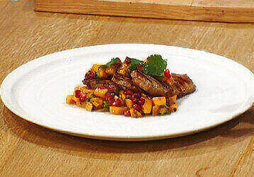

Свиные отбивные зачищаем от пленок и делаем небольшие надрезы в жировой
прослойке.
Солим, перчим, приправляем мясо кумином и сушеным имбирем.
Делаем мясу небольшой "массаж"
и обжариваем в разогретом масле с двух сторон до румяной корочки. Приправляем во время
жарки свинину кайенским перцем.
Свиные отбивные 7шт Хурма спелая 2шт Гранат 1шт Лук зеленый по вкусу Свежая мята, рубленая 2ст.л. Базилик свежий, рубленый 2ст.л. Сок лайма 2ст.л. Перец черный по вкусу Кайенский перец по вкусу Имбирь сушеный по вкусу Соль по вкусу
